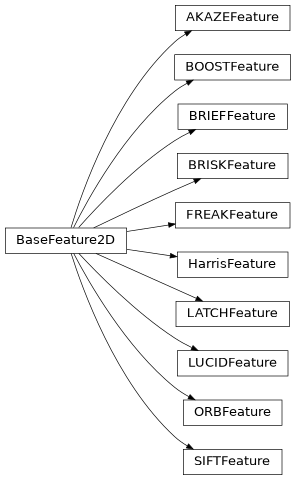

Supporting classes
Convolution kernel class
Image feature classes
Whole image features
Fiducial features
Line features
Point features

Create set of SIFT point features |
|
Create set of ORB point features |
|
Create set of BRISK point features |
|
Create set of AKAZE point features |
|
Create set of FREAK point features |
|
Create set of BOOST point features |
|
Create set of BRIEF point features |
|
Create set of DAISY point features |
|
Create set of LATCH point features |
|
Create set of LUCID point features |
|
Create set of Harris corner features |